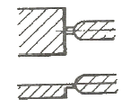
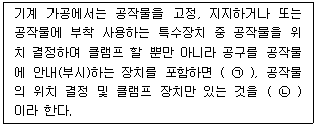
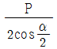
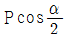
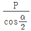
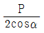

사출(프레스)금형산업기사 (2014-05-25 기출문제)
1과목: 금형설계
1. 프레스금형 설계시 생크(shank)의 위치를 결정하는 방법이 아닌 것은?
- 나사를 이용한 위치 계산
- 펀치의 외곽선 중심을 이용한 위치 계산
- 선 중심을 이용한 위치 계산
- 면 중심을 이용한 위치 계산
(정답률: 79%)

2. 중ㆍ대형 드로잉 가공시 소재의 플랜지부를 잡아 주면서 드로잉할 때 주름방지를 위해 금형내 스프링을 사용하지 않고 프레스 기계에 설치된 이 장치를 사용하게 되는데 그 명칭은?
- 녹아웃 장치
- 밸런스 슬라이더
- 레귤레이터
- 다이쿠션
(정답률: 60%)
3. 트랜스퍼 프레스 가공의 특징이 아닌 것은?
- 작업 안정성이 높다.
- 설치공안을 절약할 수 있다.
- 재료비를 절약할 수 있다.
- 프레스 작업에 숙련을 필요로 한다.
(정답률: 73%)
4. 프로그레시브 금형(progressive die)에서 파일럿 핀을 사용하는 목적 중 가장 적합한 것은?
- 소재를 눌러주기 위해서
- 가공한 스크랩을 떨어버리기 위해서
- 소재의 이송피치를 정확히 맞추어주기 위하여
- 재료가 넓을 때 움직이지 않도록 하기 위해서
(정답률: 90%)
5. 직경 40 mm, 높이 30 mm인 원통용기를 드로잉 하고자 할 때 블랭크(blank)의 직경은 얼마인가? (단, 용기의 굽힘 반경은 고려하지 않는다.)
- 80 mm
- 100 mm
- 120 mm
- 160 mm
(정답률: 42%)
6. 블랭크를 배열할 때 고려하여야 할 사항과 거리가 가장 먼 것은?
- 롤방향과 굽힘선
- 버방향
- 펀치길이
- 재료이용률 향상
(정답률: 44%)
7. 한계 드로잉률이 0.5 이고, 블랭크 직경 50 mm 의 스테인리스 강판은 최대 몇 mm 인 직경의 펀치에 의해 드로잉 될 수 있는가?
- 15
- 25
- 30
- 40
(정답률: 77%)
8. 다음 중 프레스 능력의 종류가 아닌 것은?
- 압력능력
- 속도능력
- 토크능력
- 작업능력
(정답률: 68%)
9. 가이드 포스트가 없는 다이 세트(die set)의 종류는?
- A형
- B형
- D형
- F형
(정답률: 73%)
10. 블랭킹(Blanking)금형을 설치할 때 적정 프레스는 어떻게 선정하는가?
- 블랭킹 힘을 계산하여 이에 상응하는 프레스를 선정한다.
- 스트립핑 힘을 계산하여 이에 상응하는 프레스를 선정한다.
- 무조건 용량이 큰 프레스에 설치한다.
- 아무 프레스나 설치한다.
(정답률: 91%)
11. 다음 중 이젝터 핀의 설치장소에 대한 설명으로 틀린 것은?
- 상품가치상 눈에 잘 띄지 않는 곳에 설치한다.
- 에어 및 가스 도피가 모이는 곳에 설치하여, 에어벤트의 대용으로 사용한다.
- 게이트의 하부 및 게이트의 직선 방향의 밑 부분에 가능한 설치한다.
- 성형품의 이형저항에 대한 밸런스를 고려하여 설치한다.
(정답률: 61%)
12. 다음 중 플래시(flash)의 원인이 아닌 것은?
- 형 체결력의 부족
- 낮은 수지온도
- 금형맞춤 상태의 불량
- 높은 사출압력
(정답률: 76%)
13. 성형품의 호칭치수 100 mm, 성형수축율 3/1000 일 때 상온의 금형 치수는 몇 mm 인가?
- 101.3
- 101.7
- 100.3
- 100.7
(정답률: 89%)
14. 열경화성수지로 경도와 강도가 우수하고, 냄새와 맛이 없으며 색깔이 다양하여 안전모, 단추, 면도기 케이스 등에 사용되는 수지는?
- 멜라민 수지
- 불소 수지
- 알키드 수지
- 에폭시 수지
(정답률: 74%)
15. 그림과 같은 게이트 모양의 특징에 해당되지 않는 것은?

- 형상이 간단하고 가공이 쉽다.
- 거의 모든 수지에 적용할 수 있다.
- 수정이 힘들다.
- 압력조절이 쉽다.
(정답률: 82%)
16. 성형품 외측 언더컷을 처리하기 위해 슬라이드 블록을 활용한다. 이때 슬라이드 블록 행정거리를 조절할수 있는 방법은?
- 링크와 체인
- 리턴 핀
- 슬라이드 블록의 길이
- 앵귤러 핀의 각도와 길이
(정답률: 75%)
17. 금형에서 성형품을 뽑아내기 위해서는 구배가 필요하다 일반적인 빼기 구배는?
- 0° ~ 1/2°
- 1° ~ 2°
- 2° ~ 4°
- 4° ~ 6°
(정답률: 70%)
18. 다음 중 핫러너에 대한 설명으로 옳은 것은?
- 사출 성형기의 노즐 길이는 그대로 있는 상태에서 노즐과 게이트부와의 공간에 용융수지가 고이면 금형벽과 접하는 스프루의 외측은 고화되어 단열재 역할을 하여 중심부의 수지는 용융 상태를 유지하므로 용융수지에 사출압력이 걸리면 사출이 행하여진다.
- 러너 시스템을 가열하여 항상 일정한 온도로 가열할 수 있도록 가열시스템을 내장하여 러너가 항상 일정한 온도를 유지되도록 한다.
- 성형기의 노즐을 연장시켜 노즐이 캐비티의 일부를 형성하거나 게이트부까지 노즐이 연장되는 형식으로 스프루 러너 없이 성형 가공하는 금형 형식이다.
- 3매구성 금형에서 러너의 단면적을 크게 해서 외벽에 접촉 고화환 수지를 단열층으로 이용하고, 내부의 수지를 용융상태로 유지하려는 방법으로 단열러너방식이라고도 한다.
(정답률: 78%)
19. 금형온도가 낮거나 낮은 수지온도가 원인이며, 금형설계시 콜드 슬로그 웰(cold slug well)을 충분히 마련하면 대책이 될 수 있는 성형불량은?
- 제팅(jetting)
- 플로 마크(flow mark)
- 기포(bubble)
- 은줄(silver streak)
(정답률: 65%)
20. 사출성형 제품의 두께를 t 라면 내부구석 라운딩(rounding)의 크기는?
- 0.5t
- 1.0t
- 1.5t
- 2.0t
(정답률: 65%)
2과목: 기계가공법 및 안전관리
21. 연삭숫돌과 조정숫돌 사이에 공작물을 삽입하고 지치판으로 지지하면서 가공하는 연삭기는?
- 원통 연삭기
- spling 연삭기
- Centerless 연삭기
- Cam 연삭기
(정답률: 78%)
22. 전해액 속에서 공작물을 양극(+)으로 하고, 구리 또는 아연과 같은 전기 저항이 작은 것을 음극(-)으로 하여 전류를 통할 때 공작물의 표면을 용해시켜 매끈하고 광택이 있는 면을 얻는 가공은?
- 폴리싱
- 전해연마
- 전주 가공
- 초음파 가공
(정답률: 88%)
23. 일반적으로 머시닝센터에서 가공할 수 없는 작업은?
- 드릴 작업
- 널링 작업
- 보링 작업
- 태핑 작업
(정답률: 77%)
24. 나사절삭시 두줄 나사의 피치가 2.0mm일 때 1회전시 이동 되는 거리는?
- 2mm
- 4mm
- 0.5mm
- 1mm
(정답률: 72%)
25. 전단 금형에서 클리어런스(clearance)의 크기에 영향을 주는 인자가 아닌 것은?
- 피가공재의 형상
- 피가공재의 재질
- 피가공재의 두께
- 피가공재의 경도
(정답률: 51%)
26. 유효단면적이 800mm2 변형 저항이 20kgf/mm2 인 단조물을 효율 90% 인 프레스로 단조하려 한다. 이 때 필요한 프레스의 용량은 약 몇 ton 인가?
- 17.8
- 20.2
- 24.5
- 40.4
(정답률: 40%)
27. 프레스 작업 종료 후 안전조치 사항에 대한 것 중 틀린 것은?
- 플라이휠의 정지를 위해손으로 잡으면 안된다.
- 프레스 페달은 반드시 덮개를 씌워둔다.
- 정전시 즉시 스위치를 꺼야 한다.
- 이상 음 발생시 금형 내 제품을 꺼낸다.
(정답률: 81%)
28. 주철, 황동, 경합급 초경합금을 연삭하려 할 때 가장 적합한 연삭 숫돌 입자는?
- WA
- C
- A
- GC
(정답률: 76%)
29. 다음 중 래핑의 장단점이 아닌 것은?
- 가공면이 매끈하고, 거울면을 얻을 수 있다.
- 정밀도가 높은 제품을 만들 수 있다.
- 건식만이 있기 때문에 먼지가 적은 단점이 있다.
- 가공면은 내식성, 내마멸성이 좋다.
(정답률: 87%)
30. 절삭 (밀링, 선반) 가공과 비교한 성형 연삭기의 특징 아닌 것은?
- 고정도 형상 및 치수 가공이 가능하다.
- 표면 거칠기가 양호 하다. 액체호닝
- 표면 변질층이 많고, 마모성이 좋다.
- 담금질강의 가공이 가능하다.
(정답률: 70%)
31. 일반적으로 드릴의 날 여유각은 약 얼마인가?
- 2˚ ~ 5˚
- 60˚ ~ 90˚
- 10˚ ~ 12˚
- 90˚ ~ 118˚
(정답률: 54%)
32. 입도가 작고, 연한 숫돌을 작은 압력으로 가공물의 표면에 가압하면서 가공물을 회전시킴과 동시에 숫돌에 진동을 주어 다듬질하는 가공법은?
- 수퍼피니싱(Super Finishing)
- 액체호닝(Liquid Honing)
- 드릴링(Drilling)
- 래핑(Lapping)
(정답률: 77%)
33. 다음 괄호(㉠, ㉡) 안에 알맞은 단어는?

- ㉠ 지그, ㉡ 고정구
- ㉠ 고정구, ㉡ 지그
- ㉠ 가이드, ㉡ 고정구
- ㉠ 가이드, ㉡ 지그
(정답률: 54%)
34. 사출성형기의 동작 구분을 순서대로 표시한 것은?
- 노즐 터치 → 보압 → 사출 → 냉각 → 금형 열림
- 노즐 터치 → 보압 → 냉각 → 사출 → 금형 열림
- 노즐 터치 → 사출 → 보압 → 냉각 → 금형 열림
- 노즐 터치 → 사출 → 냉각 → 보압 → 금형 열림
(정답률: 70%)
35. 머시닝센터에 관한 설명 중 틀린 것은?
- 자동공구 교환장치를 부착하고 있어 생산성 향상을 가져온다.
- NC테이프에 입력시킬수 있는 단위는 mm, inch, deg로 표시한다.
- 가공물에 프로그램을 하기위해서는 프로그램원점을 설정해야 한다.
- 증분 좌표 지령은 프로그램 원점을 기준으로 좌표값을 나타낸다.
(정답률: 69%)
36. 다음 중 밀링의 하향절삭에 대한 설명으로 옳은 것은?
- 커터의 회전방향에 관계없이 자유롭게 이송한다.
- 커터의 회전방향과 공작물의 이송방향이 같다.
- 마찰열로 공구의 마모가 빠르고 수명이 짧다.
- 공작물의 밑면을 절삭하는 것을 말한다.
(정답률: 65%)
37. 방전가공에서 가공 칩의 배출이 잘되지 않을 경우 일어 나는 현상과 거리가 먼 것은?
- 가공속도가 저하된다.
- 가공 정밀도가 나빠진다.
- 전극 소모가 적어진다.
- 아크가 발생하여 전극과 공작물을 손상할 수 있다.
(정답률: 86%)
38. 다음 중 공작기계로 가공된 평면, 원통면을 극히 소량씩 깎아내어 정확한 평면으로 다듬질하여 정밀하게 다듬질 하는 가공은?
- 태핑
- 밀링
- 스크레이핑
- 선반
(정답률: 63%)
39. 금형을 장시간 보관하는데 주의할 사항 중 틀린 것은?
- 방청유를 칠해 보관한다.
- 작업대 위에 직접 놓아도 상관없다.
- 습기가 있는 장소는 피한다.
- 진동에 주의한다.
(정답률: 89%)
40. 바이트의 공구각 중 바이트의 옆면 및 앞면과 가공물의 마찰을 줄이기 위한 각은?
- 경사각
- 절삭각
- 날끝각
- 여유각
(정답률: 72%)
3과목: 금형재료 및 정밀계측
41. 실제값과 층정값 사이의 차에 해당하는 용어는?
- 정확도
- 감도
- 오차
- 정도
(정답률: 82%)
42. 3침법에 의하여 유효지름을 측정하고자 할 경우에 최적의 3침의 지름을 구하는 공식은? (단, P : 나사의 피치, α : 나사산 각)




(정답률: 51%)
43. 투영기에서 투과 조명광의 광축이 평행 상태로 되어있어 초점에 맞지 않아도 투영상의 배율오차가 적게 되는 광학계는?
- 텔리센트릭(Telecentric)식
- 주식(Zoom)식
- 리볼버(Revolver) 식
- 수직 반사식
(정답률: 69%)
44. 지름 42.000 mm의 둥근 강재봉을 측정하였더니 42.022 mm였다. 오차백분율은?
- 0.⑤%
- 99.95%
- 5%
- 95%
(정답률: 74%)
45. 자동선별과 더불어 자동측정을 위한 자동측정기기가 만족시켜야 하는 요인 중 틀린 것은?
- 정밀성
- 가공성
- 안전성
- 신속성
(정답률: 68%)
46. 유량식 공기마이크로미터와 배압식 공기마이크로미터에 대한 설명 중 틀린 것은?
- 유량식은 유량이 구멍 면적이나 틈색 등의 미소 변위와 일정 관계를 가지는 것으로 미소변위량을 측정한다
- 배압식은 공기마이크로미터의 미소 변위를 압력계로 지시한 것이다
- 유량식 과 배압식은 모두 비교측정이기 때문에 큰 치수와 작은 치수의 두 개의 마스터가 필요하다.
- 유량식과 배압식 모두 전용 측정부가 필요 없으므로 다품정 소량생산에 적합하다.
(정답률: 70%)
47. 현장에서 투영기를 이용하여 특정한 형상을 지닌 부품을 대량으로 검사할 떄 가장 좋은 방법은?
- 필러식 현미경
- 스크린상의 유리자 이용
- 차트(chart)에 의한 비교측정
- X-Y좌표축의 읽음에 의한 검사
(정답률: 72%)
48. 직접측정 방법에 의한 측정기에 해당되지 않는 것은?
- 버니어 캘리퍼스
- 마이크로미터
- 측장기
- 다이얼 게이지
(정답률: 60%)
49. 사인 바(sine dar)의 호칭치수는 다음 어느 것에 의해 표시 되는가?
- 사인 바 지지 양측 롤러의 중심거리
- 사인 바 지지 양측 롤러의 내측거리
- 사인 바 양 측면간의 최대 거리
- 사인 바 지지 양측 롤러의 외측거리
(정답률: 71%)
50. 측정 물체가 25℃에서 95.375 mm로 측정되었을 경우 이 물체의 열팽창계수가 11.5×10-6/℃ 이면 측정표준온도인 20℃ 에서 길이는 약 몇 mm 인가?
- 95.572
- 95.370
- 95.275
- 95.378
(정답률: 57%)
51. 다음 중 비정질 합금을 설명하는 것으로 틀린 것은?
- 고강도와 인성을 겸비한 기계적 특성이 우수하다.
- 높은 내식성 및 전기 저항성과 고투자율성이 있다.
- 반도체의 리드 프레임에 사용되며 치수정밀도가 높고, 도금성이 좋다.
- 내식성이 우수하여, 면도날 제조 등에 이용된다.
(정답률: 48%)
52. 기계적 성질과 절연성이 우수하여 전기기구 및 기어제조에 사용되는 열경화성수지는?
- 페놀수지
- 불소수지
- ABC수지
- 폴리우레탄
(정답률: 67%)
53. 다음 중 고용체를 형성시 침입형 고용체를 형성하는 원자가 아닌 것은?
- Cr
- H
- B
- N
(정답률: 63%)
54. 다음 금속 중 전기 전도율이 가장 큰 것은?
- 알루미늄
- 마그네슘
- 구리
- 니켈
(정답률: 71%)
55. 땜납의 종류는 사용 용도에 따라 여러 가지가 있으나 전기제품 접합용으로 가장 널리 사용되는 땜납의 합금성분은?
- Sn-Sb
- Sn-Cu
- Sn-Zn
- Sn-Pb
(정답률: 72%)
56. 표준상태의 탄소강에서 탄소의 함유량이 증가함에 따라 증가하는 것으로만 나열된 것은?
- 비열, 전기저항, 항자력
- 비중, 열팽창계수, 열전도도
- 내식성, 항자력, 비열
- 전기저항, 연신율, 열전도도
(정답률: 43%)
57. 강철과 비교한 주철의 장점으로 옳은 것은?
- 주조성이 우수하여 복잡한 형상으로도 쉽게 주조할 수가있다.
- 가격이 아주 싸서 좋고, 강에 비하여 경도나 인성이 크므로 기계 재료에 적당하다.
- 탄성이 우수하므로 철도차량의 판 스프링 주조에 많이 사용되고 있다.
- 단조성이 좋으므로 단조품의 기계재료로 많이 사용 되고 있다.
(정답률: 53%)
58. 다음 중 열처리의 풀림목적이 아닌 것은?
- 구상화처리
- 조직의 조대화
- 내부응력의 제거
- 인성의 향상
(정답률: 59%)
59. 다음 중 초경합금 금형의 특성이 아닌 것은?
- 경도가 높다.
- 마찰계수가 크다.
- 내소착성이 높다.
- 강도가 크다.
(정답률: 45%)
60. 탄소강 중의 함유원소의 영향에 대한 설명이 틀린 것은?
- 황(S)은 적영 취성의 원인이 된다.
- 구리(Cu)는 인장강도 및 경도를 감소시키고 부식저항을 크게 한다.
- 인(P)은 상온취성의 원인이 된다.
- 규소(Si)는 인장강도 및 경도를 크게 한다.
(정답률: 57%)